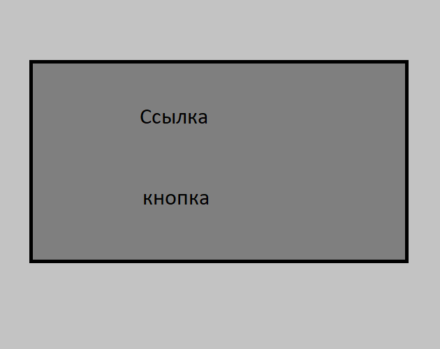
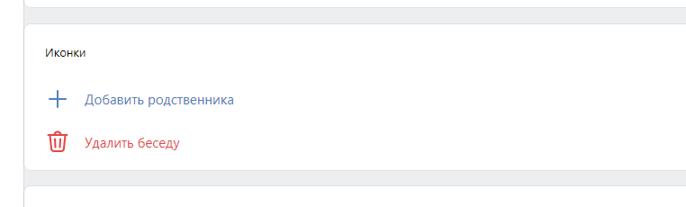
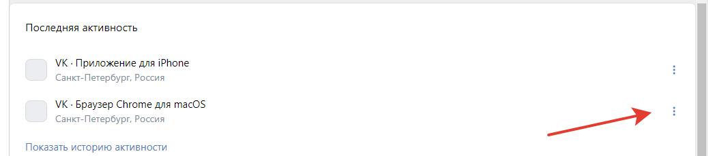

Нужно сделать платную консоль для игры на платформе ВКонтакте.
VK UI: Blocks -> MiniInfoCell
Если новый пользователь - при запуске должно открыться модельное окно, в котором будет написан приветственный текст. Ниже поле для ввода ссылки (ссылка на страницу вк или айди). Если поле пустое - будет кнопка "Пропустить". Если в поле ссылка/айди будет кнопка "Далее". Из ссылки нужно получить айди и вписать айди нового пользователя пригласившему, а пользователю айди пригласившего. Если айди пользователя есть в базе - на аккаунт нового пользователя зачисляются деньги на баланс. Далее окно закрывается.

Перелистывающиеся страницы (основные новости).
VK UI: Blocks -> Gallery
Под ними кнопки управления (желательно с иконками.).
VK UI: Blocks -> CellButton

В конце каждой кнопки иконка с вопросом. Нажав на неё откроется модельное окно с информацией.

Перелистывающиеся страницы (основные новости).
VK UI: Blocks -> CardScroll
Под ними кнопки управления (желательно с иконками.).
VK UI: Blocks -> CellButton
В конце каждой кнопки иконка с вопросом. Нажав на неё откроется модельное окно с информацией.
(Доступны у пользователя с соответствующей отметкой в базе).
Вверху поле для поиска (Имя, фамилия и айди). Параметры будут передаваться в Json формате
VK UI: Blocks -> Search
Список идёт сверху вниз. Отображается аватарка, имя и фамилия. Под именем и фамилией будет ссылка на профиль (переход на страницу по нажатию).
VK UI: Blocks -> PullToRefresh
Рядом кнопка действий. Открывает модельное окно (через функцию) в котором видны балансы пользователя. И кнопки действий: Заблокировать/разблокировать, выдать/ забрать деньги со счёта